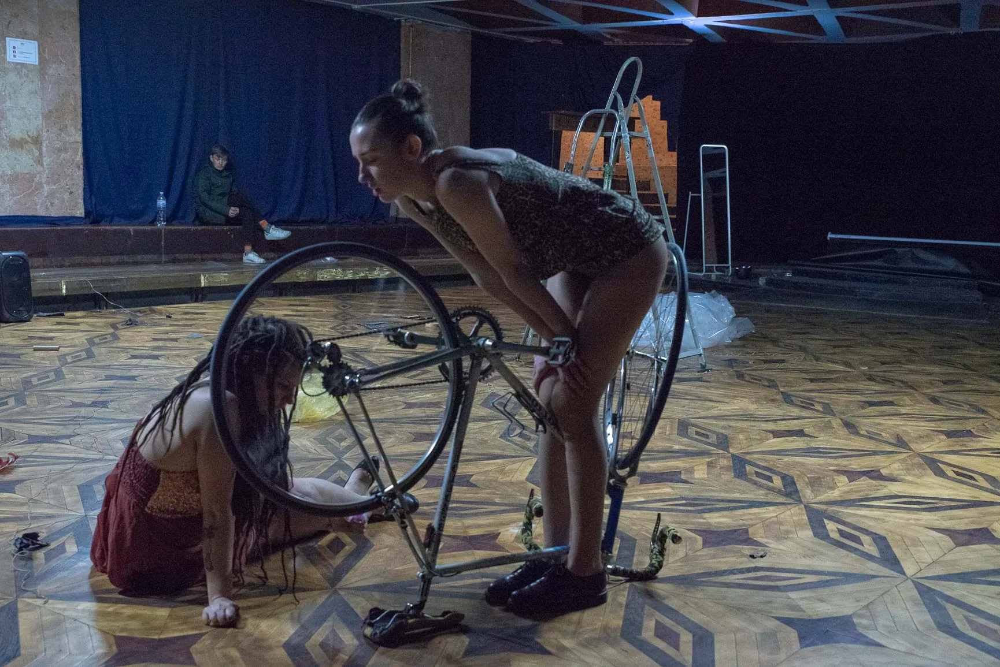
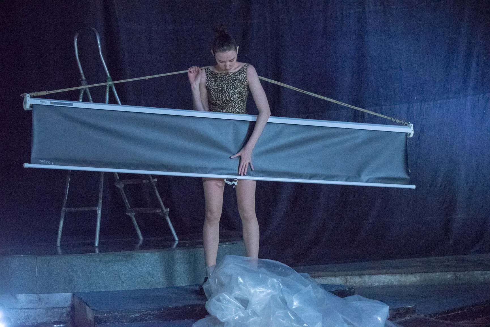
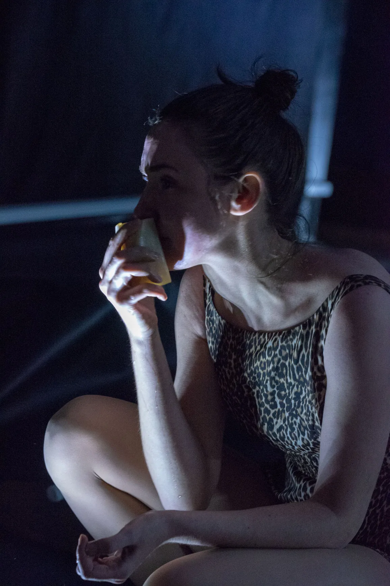

2019 / Lviv
JÜRGEN FRITZ WORKSHOP / ZABIH
A group performance developed during Jürgen Fritz’s workshop at the ZABIH festival. Everyday objects, temporary structures and gestures form a shifting environment in which the body continuously renegotiates its limits.


